Clase 11 "Armamos el carrito, paso a paso"
y no salió como esperábamos.
Hoy lo armamos juntos,
un paso a la vez.
Las reglas de hoy
- Armar solo lo del paso, con el interruptor apagado
- Revisar el positivo y el negativo antes de prender
- Probar lo que dice el paso
- Si no funciona, no avanzamos: levanten la mano
Ojo
Todo está calculado para 6 voltios:
4 pilas AA en serie.
Nada de la pila de 9 V:
el L293D se daña con más de 7 V.
🖼️ ESPACIO PARA MEME/GIF
El carrito que vamos a armar
Dos sensores al frente, uno a cada lado, mirando en diagonal hacia afuera: como las luces de un carro. Cada sensor frena la rueda del lado contrario, y el carrito se guía solo.
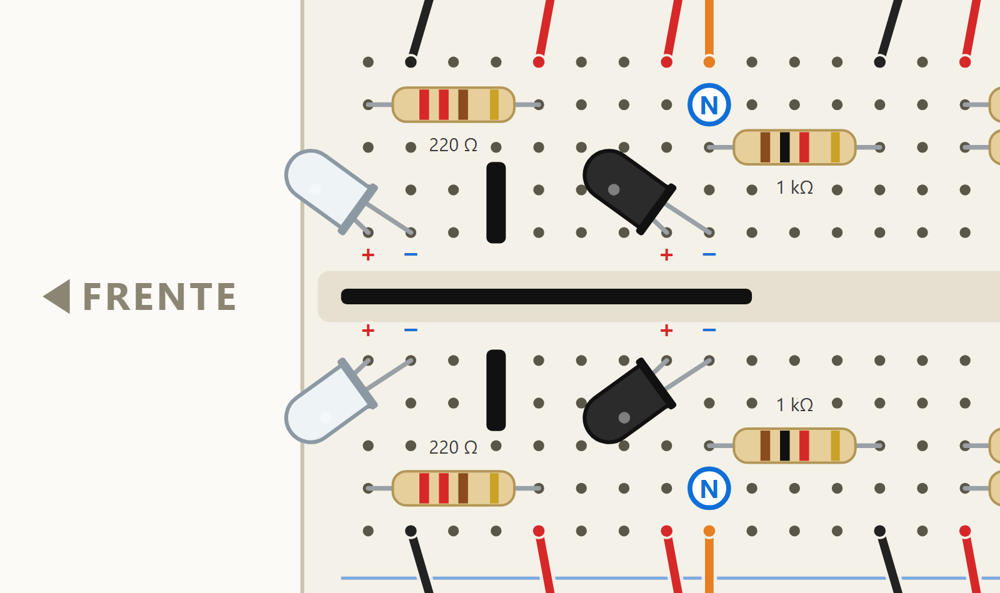
Hoy vamos a ver
- Bloque 1: la alimentación (paso 1)
- Bloque 2: el sensor izquierdo (pasos 2 a 6)
- Bloque 3: el chip y los motores (pasos 7 a 9)
- Bloque 4: el sensor derecho y el cruce (pasos 10 a 15)
- Bloque 5: el LM358 (pasos 16 a 20)
- Bloque 6: condensadores y pack (pasos 21 a 23)
Lo que necesitamos
Base
protoboard, portapilas 4×AA con pilas, interruptor, cables, multímetro
protoboard, portapilas 4×AA con pilas, interruptor, cables, multímetro
Cada sensor (×2)
LED infrarrojo, receptor, LED rojo, R1 220 Ω, R2 y R3 1 kΩ, R4 10 kΩ, transistor 2N2222A
LED infrarrojo, receptor, LED rojo, R1 220 Ω, R2 y R3 1 kΩ, R4 10 kΩ, transistor 2N2222A
Motores
L293D y dos motores con rueda de 3 a 6 V
L293D y dos motores con rueda de 3 a 6 V
El LM358
LM358, 2 potenciómetros de 10 kΩ, 2 R5 de 47 kΩ
LM358, 2 potenciómetros de 10 kΩ, 2 R5 de 47 kΩ
Condensadores
1 de 470 µF y 4 de 100 nF (104)
1 de 470 µF y 4 de 100 nF (104)
🖼️ ESPACIO PARA MEME/GIF
Bloque 1: la alimentación
Paso 1 de 23
Alimentación de 6 V
Lo que logramos: Tener 6 V entre el positivo y el negativo, con un interruptor para apagar todo.
Paso 1 · Alimentación de 6 V
Todo el carrito toma energía de 4 pilas AA en serie: unos 6 V. El interruptor es el botón de apagado de todo.
Paso 1 · Alimentación de 6 V
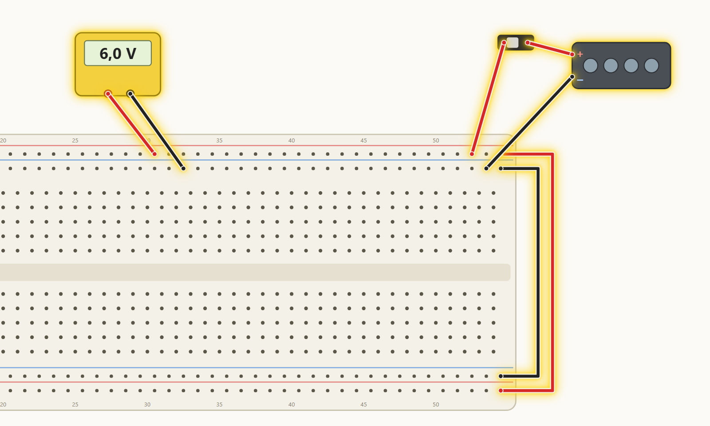
- Cable rojo del portapilas a una pata de un lado del interruptor
- Pata del centro del interruptor al positivo (fila roja)
- Cable negro del portapilas al negativo (fila azul)
- Cables entre filas: rojo con rojo, negro con negro
Paso 1 · Revisar positivo y negativo
Muchas protoboards traen las filas del positivo y del negativo cortadas por la mitad.
Hay que unir las dos mitades con un cable.
Y unir las filas de arriba con las de abajo:
rojo con rojo, negro con negro.
Paso 1 · Prueba
Interruptor encendido. Multímetro en voltios DC: punta roja al positivo, negra al negativo.
Debe marcar entre 5,6 y 6,4 V.
Probar en varios puntos de cada fila.
Paso 1 · Si algo falla
- Menos de 4,5 V: pilas gastadas
- 0 V: interruptor apagado o cable rojo sin contacto
- Bien en un extremo y 0 V en el otro: la fila está partida, unirla con un cable
- Número negativo: puntas del multímetro al revés
Bloque 2: el sensor izquierdo
🖼️ ESPACIO PARA MEME/GIF
Paso 2 de 23
El emisor infrarrojo
Lo que logramos: Que el LED infrarrojo emita luz que se pueda ver con la cámara del celular.
Paso 2 · El emisor infrarrojo
El emisor es un LED que echa luz infrarroja: el ojo no la ve, la cámara del celular sí. Esa luz sale, rebota en un obstáculo y vuelve.
Y lo ponemos al frente, en diagonal hacia afuera, como las luces de un carro.

Paso 2 · El emisor infrarrojo
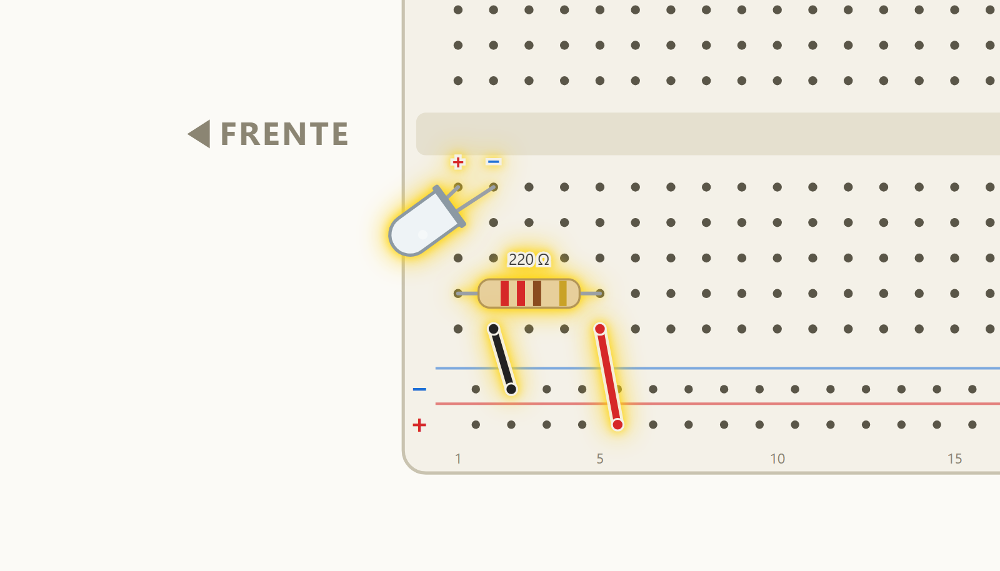
- R1 (220 Ω): un extremo al positivo
- El otro extremo de R1 a la pata larga (+) del LED infrarrojo (el transparente)
- Pata corta (−) del LED al negativo
- El LED va al frente: patas en las primeras columnas, cabeza hacia afuera
Paso 2 · Prueba
Multímetro entre las dos patas del LED infrarrojo: cerca de 1,2 V.
Cámara del celular apuntando al LED: luz morada.
Paso 2 · Si algo falla
- No se ve la luz y marca casi 6 V: el LED está al revés
- 0 V: el LED no recibe positivo, revisar el cable y R1
- 1,2 V pero no se ve nada: la cámara tiene filtro infrarrojo, probar con la frontal
- El valor salta: mal contacto, mover las piezas o cambiarlas de hueco
Paso 3 de 23
El receptor y R3
Lo que logramos: Que el receptor detecte la luz reflejada y ese cambio se pueda medir como un voltaje.
Paso 3 · El receptor y R3
El receptor se parece a un LED pero es oscuro: deja pasar más corriente cuando le llega luz infrarroja. R3 convierte eso en un voltaje en el punto N:
sin nada enfrente, casi 0 V; con una mano, sube.

Paso 3 · El receptor y R3
- Pata corta del receptor (el oscuro) al positivo
- Pata larga en una fila libre: ese punto se llama N
- R3 (1 kΩ) de la fila de N al negativo
- Barrera opaca entre emisor y receptor
Paso 3 · Barrera y obstáculo de prueba
Barrera: termoencogible negro grueso, dos vueltas de cinta negra o cartón negro grueso.
Los plásticos negros delgados dejan pasar el infrarrojo.
Obstáculo: cartón blanco, opaco y mate.
Lo negro absorbe y lo brillante no sirve.
Paso 3 · Prueba
Pila desconectada, en ohmios: de la pata larga al negativo, cerca de 1 kΩ.
Pila conectada: en N, sin nada enfrente, menos de 0,5 V.
Con un cartón blanco a 2 o 3 cm: N sube.
Paso 3 · Si algo falla
- Pata corta con casi 0 V: no le llega el positivo
- En ohmios marca OL: R3 no llega al negativo, medir por tramos
- N no sube con el cartón: acercar más, revisar la barrera y que el receptor no esté al revés
- N se queda alto sin nada enfrente: R3 sin contacto, o el receptor ve el emisor directo
- Sube muy poco: cambiar R3 por 4,7 kΩ
Paso 4 de 23
El LED rojo
Lo que logramos: Armar la salida del sensor: un LED rojo que por ahora queda apagado y un punto S con voltaje alto.
Paso 4 · El LED rojo
El LED rojo es nuestro indicador: nos dice cuándo el sensor "ve". S es la salida: en reposo está en alto, cerca de 5,4 V, y el LED apagado.
Si S se conecta al negativo, el LED prende.

Paso 4 · El LED rojo
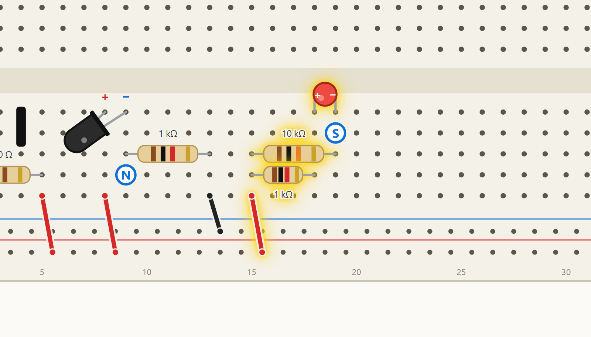
- R2 (1 kΩ) del positivo a la pata larga (+) del LED rojo
- Pata corta (−) en una fila libre: el punto S
- R4 (10 kΩ) del positivo a la misma fila S
- Nada más en S por ahora
Paso 4 · Prueba
S marca cerca de 5,4 V y el LED está apagado.
Con un cable de S al negativo: el LED prende.
Al quitar el cable, se apaga.
Paso 4 · Si algo falla
- No prende al unir S con el negativo: LED al revés
- S casi 0 V y LED prendido sin tocar nada: la fila S toca el negativo
- S bajo (por ejemplo 3 V): R4 mal puesta o de menor valor (café, negro, naranja)
Paso 5 de 23
El transistor
Lo que logramos: Poner el transistor que enciende el LED rojo cuando le llega una pequeña corriente en la base.
Paso 5 · El transistor
El transistor es un interruptor controlado: una corriente pequeña en la base (B) deja pasar una grande de C a E. Aquí: si B recibe corriente, baja S al negativo y el LED rojo prende.

Paso 5 · El transistor
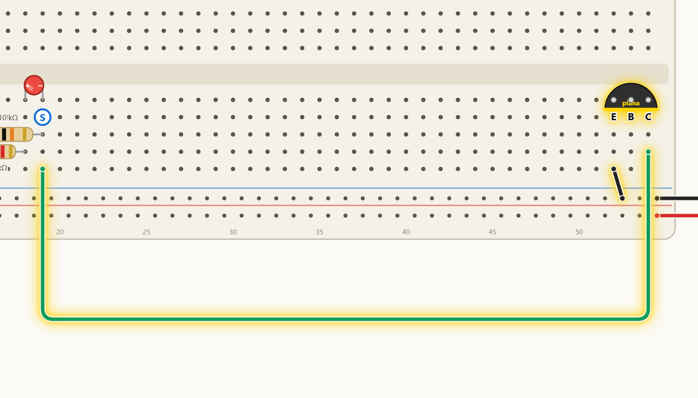
- 2N2222A con la cara plana hacia ustedes: de izquierda a derecha E, B, C
- E al negativo
- C a la fila S
- B sin conectar por ahora
Paso 5 · Ojo con las patas del transistor
Muchos 2N2222A traen las patas E, B, C mirando la cara plana.
Algunos vienen al revés: C, B, E.
Si la prueba no funciona: girar el transistor 180° y cambiar los dos cables de lugar.
Paso 5 · Prueba
LED apagado y S cerca de 5,4 V.
Tocar la pata del centro (B) con una resistencia de 1 kΩ cuyo otro extremo va al positivo: el LED prende.
Al quitarla, se apaga.
Paso 5 · Si algo falla
- No prende al tocar B: transistor al revés, o cables de E o C sin contacto
- Prendido sin tocar nada: patas en otro orden o una pata toca otra fila
- S baja apenas se pone el transistor: algún cable toca la base
- Sin resistencia de 1 kΩ sirve una de 2,2 kΩ o 4,7 kΩ
Paso 6 de 23
Unir el receptor con el transistor
Lo que logramos: Completar el sensor: el LED rojo prende al acercar una mano y se apaga al alejarla.
Paso 6 · Unir el receptor con el transistor
Ahora unimos lo que ve el receptor (N) con la base del transistor. Luz que rebota, N sube, el transistor conduce, S baja, el LED prende.
Ya tenemos un sensor de proximidad.

Paso 6 · Unir el receptor con el transistor
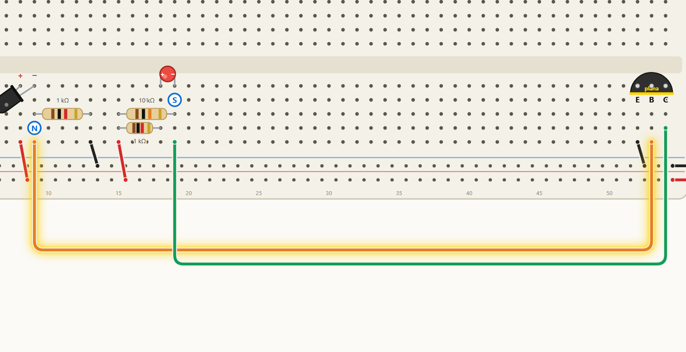
- Un cable del punto N a la base del transistor (pata del centro)
- Nada más
Paso 6 · Prueba
Sin nada enfrente: LED apagado.
Mano o cartón blanco frente al emisor y al receptor: prende.
Al alejarlos: se apaga.
Medir a qué distancia empieza: unos 5 a 10 cm.
Paso 6 · Si algo falla
- Prendido siempre: revisar R3 al negativo (1 kΩ), la barrera y probar con menos luz
- Nunca prende: cable de N a la pata del centro, repetir las pruebas de los pasos 5 y 3
- Prende solo con la mano pegada: cambiar R3 por 4,7 kΩ
- Prende tenue o parpadea: mal contacto
🖼️ ESPACIO PARA MEME/GIF
Bloque 3: el chip y los motores
Paso 7 de 23
El L293D, alimentado
Lo que logramos: Dejar puesto y alimentado el chip que mueve los motores, todavía sin motores.
Paso 7 · El L293D, alimentado
El L293D es un puente H: recibe una señal pequeña (la del sensor) y maneja los motores, que piden más corriente de la que el sensor puede dar. Va a caballo del canal central. La muesca marca la pata 1 y las patas se cuentan en forma de U.

Paso 7 · El L293D, alimentado
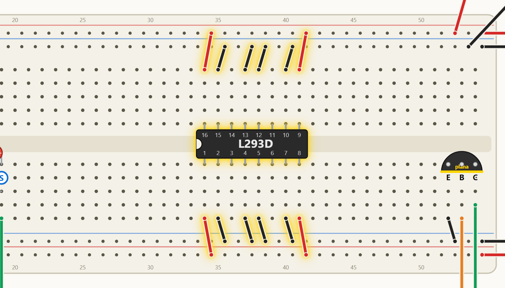
- Patas 1, 8, 9 y 16 al positivo (+6 V)
- Patas 2, 4, 5, 10, 12 y 13 al negativo
- Patas 7 y 15 al negativo por ahora
- Patas 3, 6, 11 y 14 libres: son las de los motores
Paso 7 · Prueba
Pata 16 contra el negativo: 5,4 a 6 V.
Lo mismo en las patas 8, 1 y 9.
El chip no debe calentarse: tocarlo unos segundos.
Paso 7 · Si algo falla
- El chip se calienta: apagar ya y revisar que esté a caballo del canal y que ninguna pata esté mal conectada
- Pata 16 casi 0 V: el cable no hace contacto
- Nunca pasar de 7 V en la pata 16
Paso 8 de 23
Motor 1 y el sensor izquierdo
Lo que logramos: Que el motor 1 gire con el camino libre y se frene al poner la mano frente al sensor.
Paso 8 · Motor 1 y el sensor izquierdo
El chip hace girar el motor cuando sus dos patas de entrada (1A y 2A) tienen voltaje distinto. Sin obstáculo: 2A en alto y 1A en tierra, el motor gira.
Con la mano: el sensor baja 2A a tierra, quedan iguales y el motor frena.

Paso 8 · Motor 1 y el sensor izquierdo
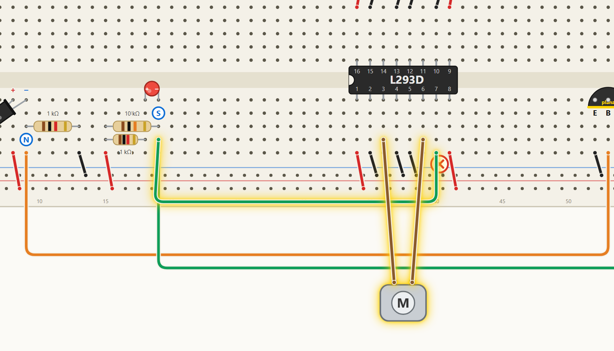
- Un cable del motor 1 a la pata 3
- El otro cable del motor 1 a la pata 6
- Pata 7: quitarla de GND y llevarla a la salida S del sensor izquierdo
- Este motor 1 será la rueda derecha
Paso 8 · Prueba
Sin nada frente al sensor: el motor gira.
Con la mano: se frena (y el LED rojo prende).
Al retirarla: vuelve a girar.
Paso 8 · Si algo falla
- No gira nunca: patas 1, 8, 9 y 16 a +6 V, cables en 3 y 6, probar el motor directo a la pila
- Gira siempre aunque el LED prenda: la pata 7 no llega a S
- Gira siempre y el LED no prende: repetir el paso 6
- Gira lento: pilas gastadas
- Gira al revés: invertir sus dos cables
Paso 9 de 23
Motor 2
Lo que logramos: Que los dos motores giren y se frenen juntos con el mismo sensor. Es un paso intermedio.
Paso 9 · Motor 2
Repetimos con la otra mitad del chip. Por ahora el motor 2 usa el mismo cable del sensor izquierdo: más adelante se lo pasamos al derecho.

Paso 9 · Motor 2
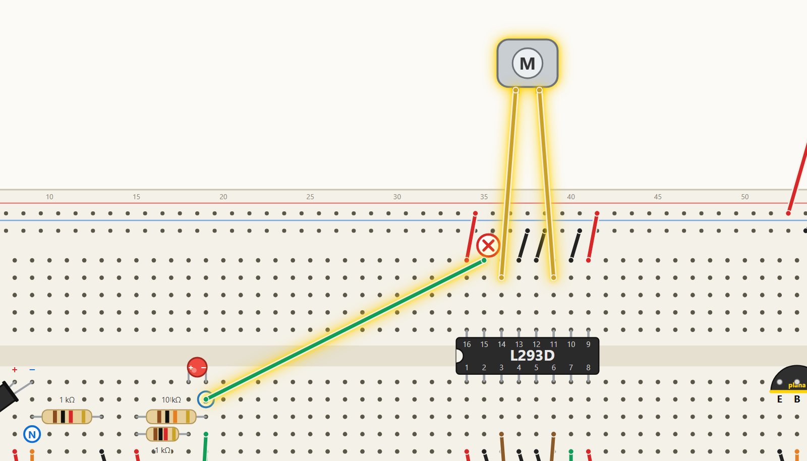
- Un cable del motor 2 a la pata 14
- El otro cable del motor 2 a la pata 11
- Pata 15: quitarla de GND y unirla al mismo cable de S del sensor izquierdo
- Este motor 2 será la rueda izquierda
Paso 9 · Prueba
Sin obstáculo: los dos motores giran.
Con la mano frente al sensor: los dos se frenan.
🖼️ ESPACIO PARA MEME/GIF
10 minutos
Bloque 4: el sensor derecho y el cruce
Paso 10 de 23
Sensor derecho: el emisor
Lo que logramos: Empezar el segundo sensor, igual al izquierdo, en la otra mitad de la protoboard.
Paso 10 · Sensor derecho: el emisor
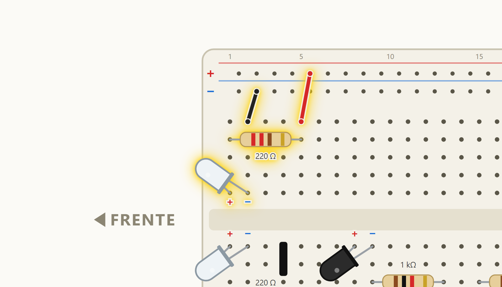
- R1 (220 Ω) del positivo a la pata larga (+) del LED infrarrojo
- Pata corta (−) al negativo
- Al frente, con la cabeza hacia la derecha
- El positivo y el negativo de este lado deben estar unidos con los del otro lado
Paso 10 · Prueba
Entre las patas del LED infrarrojo cerca de 1,2 V y luz morada en la cámara del celular, como en el paso 2.
Paso 11 de 23
Sensor derecho: el receptor y R3
Lo que logramos: Que el receptor derecho detecte la luz reflejada, igual que el izquierdo.
Paso 11 · Sensor derecho: el receptor y R3
- Pata corta del receptor al positivo
- Pata larga en una fila libre (punto N) y R3 (1 kΩ) en esa fila
- Otro extremo de R3 al negativo
- Barrera entre emisor y receptor, y otra barrera entre el sensor izquierdo y el derecho
Paso 11 · Prueba
Pila desconectada, en ohmios: cerca de 1 kΩ entre el negativo y la pata larga.
Pila conectada: menos de 0,5 V sin nada enfrente y sube con un cartón blanco a 2 o 3 cm.
Paso 12 de 23
Sensor derecho: el LED rojo
Lo que logramos: La parte de salida del sensor derecho, con su propio punto S.
Paso 12 · Sensor derecho: el LED rojo
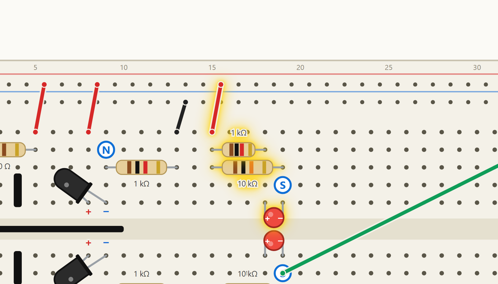
- R2 (1 kΩ) del positivo a la pata larga (+) del LED rojo
- Pata corta (−) en una fila libre: el punto S
- R4 (10 kΩ) del positivo a la misma fila S
- Nada más en S
Paso 12 · Prueba
S marca cerca de 5,4 V y el LED está apagado.
Con un cable de S al negativo: el LED prende.
Paso 13 de 23
Sensor derecho: el transistor
Lo que logramos: Poner el transistor del sensor derecho y comprobar que responde.
Paso 13 · Sensor derecho: el transistor
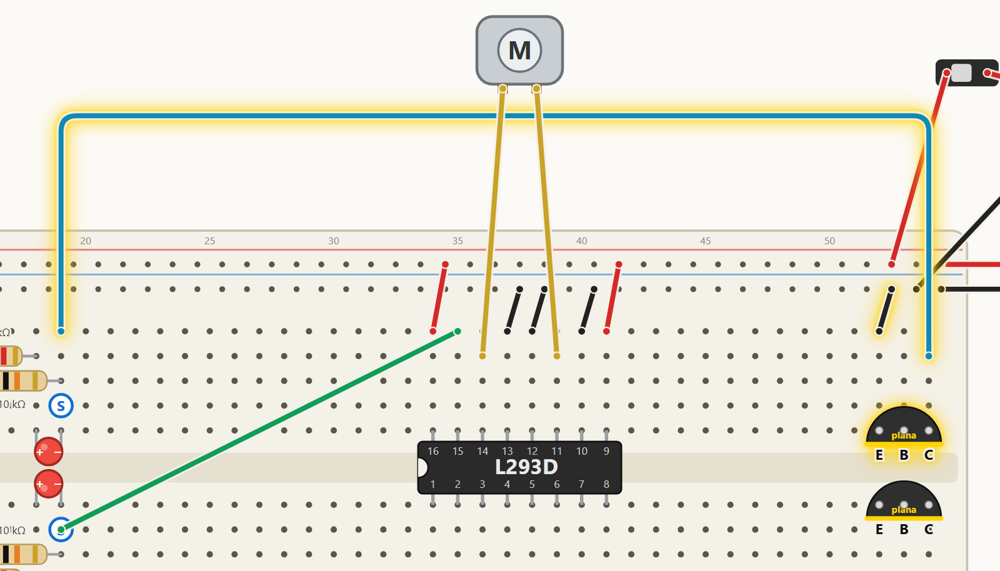
- Transistor con la cara plana hacia ustedes: E, B, C de izquierda a derecha
- E al negativo y C a la fila S
- B sin conectar por ahora
Paso 13 · Prueba
LED apagado.
Tocar la pata B con una resistencia de 1 kΩ cuyo otro extremo va al positivo: el LED prende.
Al quitarla, se apaga.
Paso 14 de 23
Sensor derecho: unir receptor y transistor
Lo que logramos: Completar el sensor derecho: su LED rojo prende con la mano y se apaga al alejarla.
Paso 14 · Sensor derecho: unir receptor y transistor
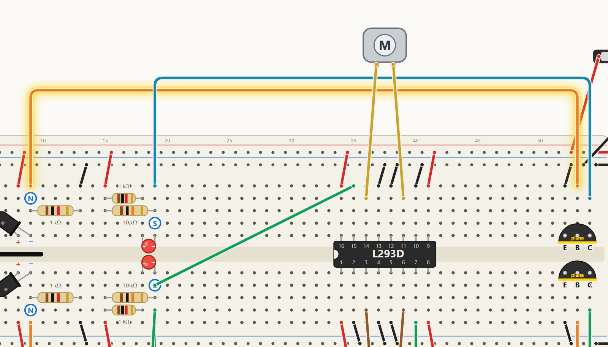
- Un cable del punto N a la base del transistor (pata del centro)
Paso 14 · Prueba
Sin nada enfrente: LED derecho apagado.
Con la mano o un cartón: prende; al alejarlos, se apaga.
Probarlo solo, sin tapar el sensor izquierdo.
Paso 15 de 23
El cruce: la pata 15 al sensor derecho
Lo que logramos: Un carrito que esquiva: cada sensor frena la rueda del lado contrario.
Paso 15 · El cruce: la pata 15 al sensor derecho
Si el sensor izquierdo ve un obstáculo, hay que frenar la rueda derecha: el carrito gira a la derecha y se aleja. Por eso cruzamos los cables: la pata 15 deja el sensor izquierdo y pasa al derecho.

Paso 15 · El cruce: la pata 15 al sensor derecho
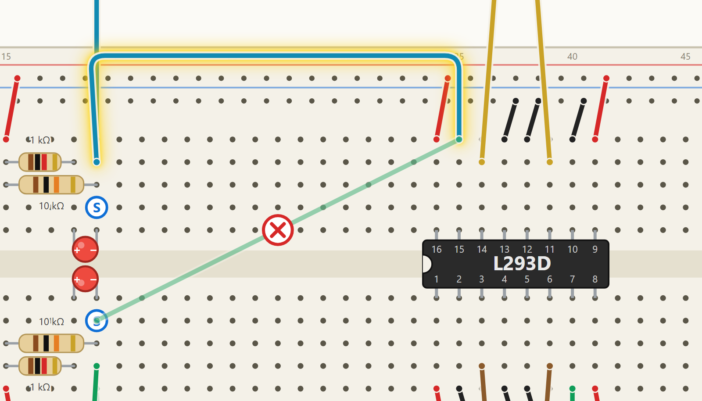
- Quitar de la pata 15 el cable que venía de S del sensor izquierdo
- Llevarlo a la salida S del sensor derecho
- Pata 7 recibe el sensor izquierdo y mueve el motor 1 (rueda derecha)
- Pata 15 recibe el sensor derecho y mueve el motor 2 (rueda izquierda)
Paso 15 · Los cuatro casos
| Nada enfrente | los dos motores giran |
| Mano al sensor izquierdo | frena el motor 1 (rueda derecha): gira a la derecha |
| Mano al sensor derecho | frena el motor 2 (rueda izquierda): gira a la izquierda |
| Mano a los dos | los dos se frenan |
Paso 15 · Si algo falla
- Un motor no se frena con su sensor: la pata 7 o la 15 no llega a la S de ese sensor
- Frena el motor del mismo lado: intercambiar los cables de los dos motores
- Los dos se frenan con un solo sensor: las patas 7 y 15 están en la misma salida
🖼️ ESPACIO PARA MEME/GIF
10 minutos
El circuito en bloques
Así viaja la señal
Emisor manda luz, el Receptor la ve y entrega N.
El que decide compara y mueve S.
La Salida prende el LED y avisa al L293D, que frena un motor.
El que decide compara y mueve S.
La Salida prende el LED y avisa al L293D, que frena un motor.
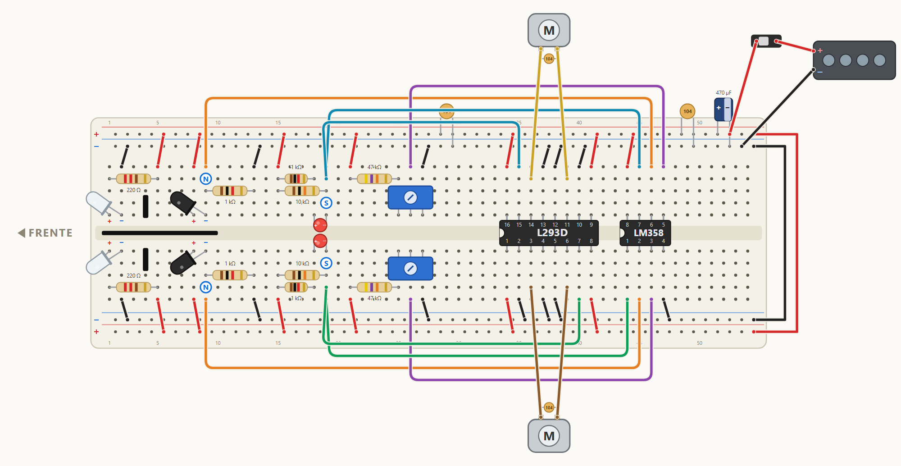
Bloque · Alimentación
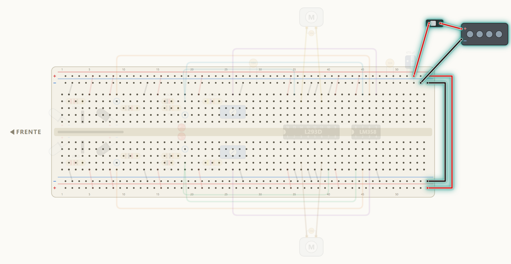
La pila, el interruptor y las filas del positivo (+) y del negativo (−). Funciona sola: entre el + y el − debe haber de 5,6 a 6,4 V.
Bloque · Emisor
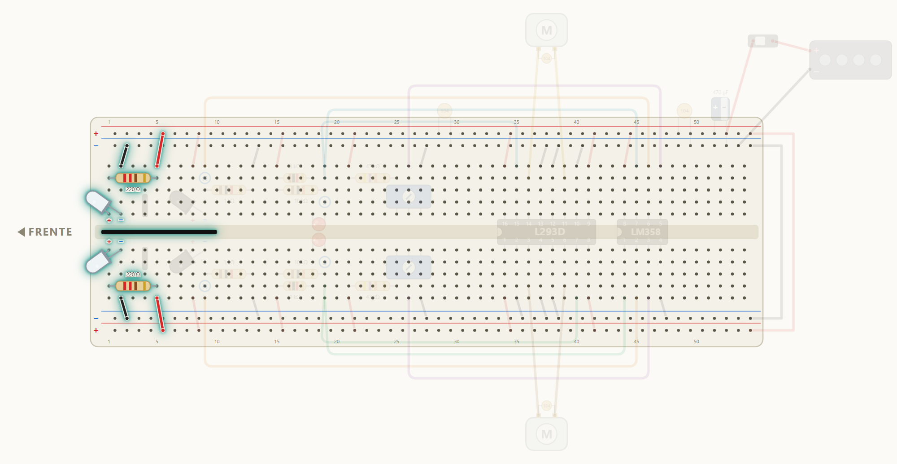
R1 y el LED infrarrojo, entre el positivo y el negativo. Funciona solo, no depende de nada más. Prueba: 1,2 V entre sus patas y luz morada en la cámara del celular.
Bloque · Receptor
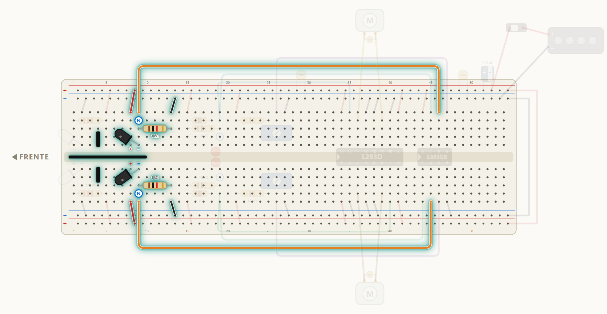
El receptor infrarrojo y R3: entregan el voltaje del punto N. Solo no enciende nada: N tiene que llegar a quien decide (el transistor o el LM358). Prueba: N sube cuando hay un cartón blanco enfrente.
Bloque · Salida (LED rojo)
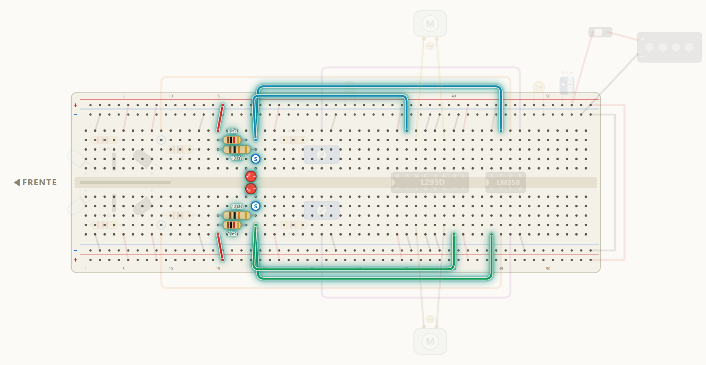
R2, el LED rojo y R4, con el punto S. Funciona sola: S en alto y el LED apagado; si se une S al negativo, prende. De S sale el cable hacia el L293D.
Bloque · El que decide
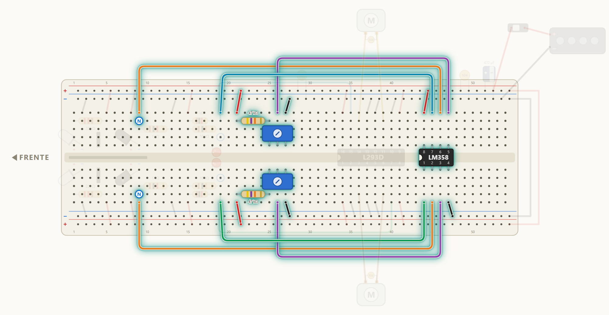
El transistor (pasos 5 a 14) o el LM358 con su umbral (pasos 16 a 20). Recibe N del receptor y mueve S de la salida: es el puente entre lo que se ve y lo que se hace.
Bloque · Motores (L293D)
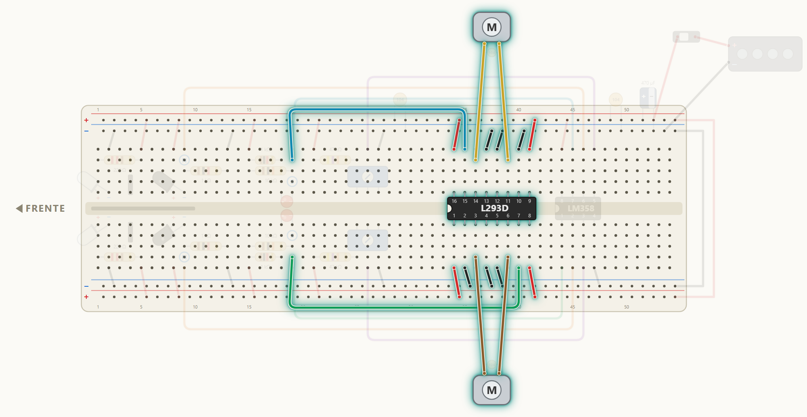
El L293D, los dos motores y, si se usa, su pack de pilas. Recibe una salida S por motor. Sin los sensores los motores giran siempre.
Bloque · Condensadores
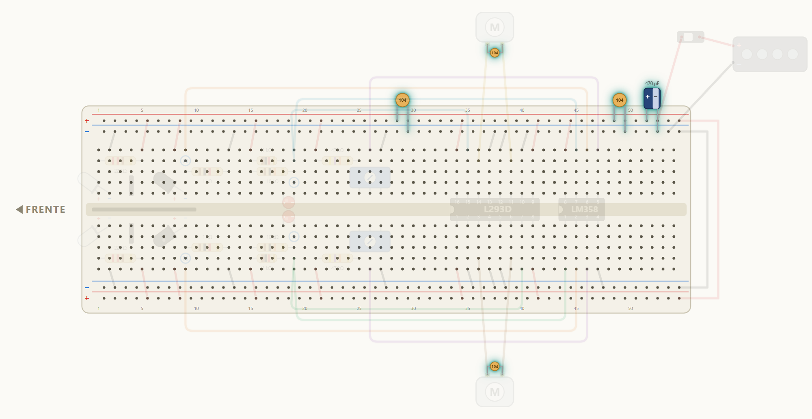
C1 a C5. No cambian lo que hace el circuito: solo quitan ruido. Se agregan al final.
🖼️ ESPACIO PARA MEME/GIF
Bloque 5: el LM358
Paso 16 de 23
El LM358, alimentado
Lo que logramos: Poner el chip que va a decidir cuándo hay un obstáculo y alimentarlo.
Paso 16 · El LM358, alimentado
El transistor decide con un "sí o no" brusco y depende mucho de la luz del salón. El LM358 es un comparador: compara dos voltajes y decide con precisión.
A partir de aquí los transistores se retiran.

Paso 16 · El LM358, alimentado
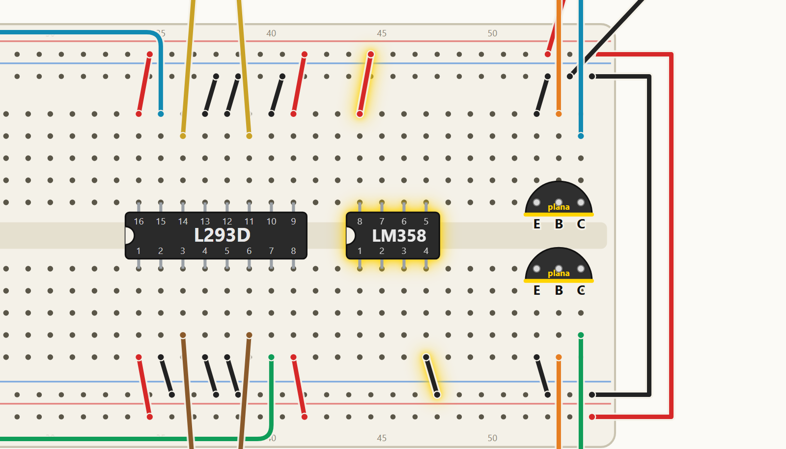
- LM358 a caballo del canal, junto al L293D sin tocarlo
- La muesca marca la pata 1; se cuentan en U: 1 a 4 por un lado, 5 a 8 por el otro
- Pata 8 al positivo
- Pata 4 al negativo
Paso 16 · Prueba
Pata 8: 5,4 a 6 V.
Pata 4: 0 V.
Paso 16 · Si algo falla
- Pata 8 con muy poco (por ejemplo 1 V): es el error más común, el cable está en otra fila o no hace contacto
- El chip se calienta: está al revés o hay una pata en tierra que no corresponde
- Pata 4 sin 0 V: el cable al negativo no hace contacto
Paso 17 de 23
El umbral: R5 y el potenciómetro
Lo que logramos: Fabricar un voltaje ajustable, el umbral, que decide qué tan cerca debe estar un obstáculo.
Paso 17 · El umbral: R5 y el potenciómetro
R5 y el potenciómetro forman un divisor de voltaje: al girar el potenciómetro, el voltaje del centro (el cursor) sube y baja entre 0 y unos 0,8 V. Ese voltaje es la vara de medir del LM358.

Paso 17 · El umbral: R5 y el potenciómetro
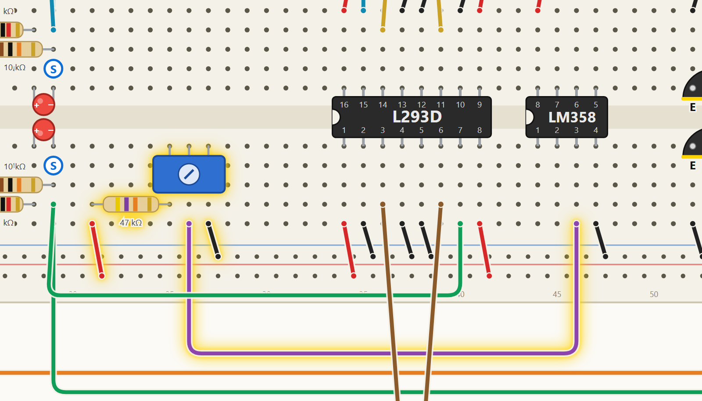
- R5 (47 kΩ) del positivo a una pata de un extremo del potenciómetro
- La otra pata del extremo al negativo
- La pata del centro (cursor) a la pata 3 del LM358
Paso 17 · Prueba
Midiendo en la pata 3 mientras se gira el potenciómetro:
el voltaje cambia de casi 0 V a unos 0,8 V.
Paso 18 de 23
Pasar el sensor izquierdo al LM358
Lo que logramos: Que el LM358 reemplace al transistor en el sensor izquierdo.
Paso 18 · Pasar el sensor izquierdo al LM358
El LM358 compara: si N (lo que ve el receptor) pasa del umbral de la pata 3, la salida baja a tierra y el LED prende. Igual que hacía el transistor, pero ahora el umbral lo ajustamos nosotros.
La parte que ve la luz no cambia: receptor + R3 entregan N, que ahora llega a la pata 2.

Paso 18 · Pasar el sensor izquierdo al LM358
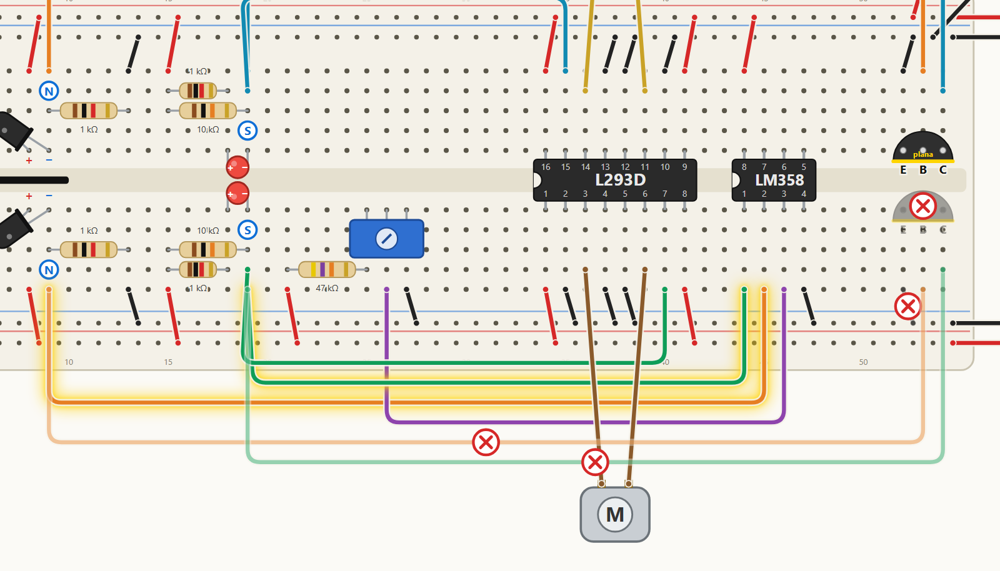
- Quitar el transistor del sensor izquierdo y los tres cables que iban a él
- Un cable de N a la pata 2 del LM358
- Un cable de la pata 1 (la salida) a la fila S
- R3 se queda en 1 kΩ
Paso 18 · Prueba
Pata 2 sin nada enfrente: menos de 0,4 V.
Girar el potenciómetro hasta que el LED quede apagado sin nada enfrente y prenda al acercar la mano.
El motor 1 gira libre y frena con la mano.
Paso 18 · Si algo falla
- LED prendido siempre: medir la pata 2; si marca 1 V o más, R3 no llega al negativo o es de 4,7 kΩ; si está baja, revisar la pata 8
- Nunca prende: el umbral está muy alto, bajarlo, o la pata 1 no está unida a S
- El potenciómetro no cambia nada: repetir el paso 17
Paso 19 de 23
El umbral del sensor derecho
Lo que logramos: El mismo voltaje ajustable del paso 17, ahora para el sensor derecho, con la otra mitad del LM358.
Paso 19 · El umbral del sensor derecho
El LM358 tiene dos comparadores: el izquierdo usa las patas 1, 2 y 3; el derecho, las patas 5, 6 y 7.

Paso 19 · El umbral del sensor derecho
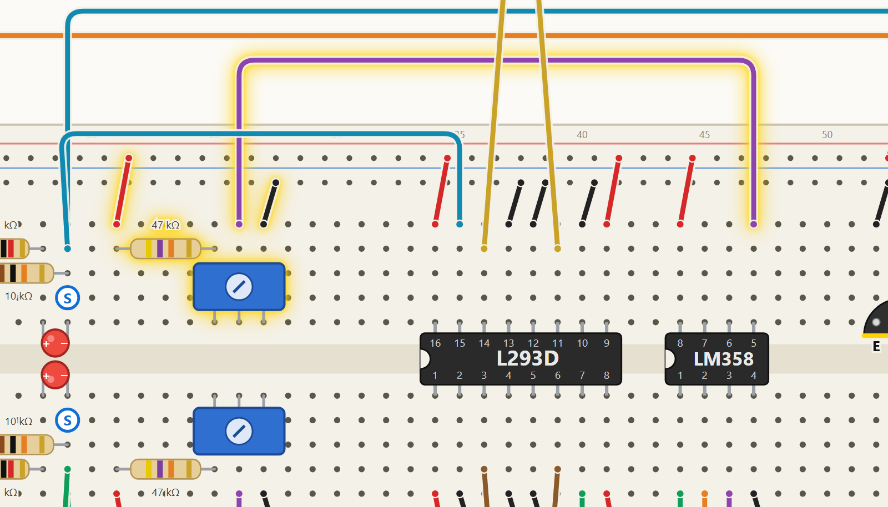
- Otro divisor igual: R5 (47 kΩ) del positivo a un extremo de un segundo potenciómetro
- El otro extremo al negativo
- La pata del centro (cursor) a la pata 5 del LM358
Paso 19 · Prueba
En la pata 5, girando el potenciómetro: de casi 0 V a unos 0,8 V.
Paso 20 de 23
Pasar el sensor derecho al LM358
Lo que logramos: Que los dos sensores usen el LM358 y el carrito sea ajustable de los dos lados.
Paso 20 · Pasar el sensor derecho al LM358
Igual que en el sensor izquierdo: receptor + R3 entregan N, ahora a la pata 6. La salida del comparador, la pata 7, va a S, y de S sigue el cable a la pata 15 del L293D.

Paso 20 · Pasar el sensor derecho al LM358
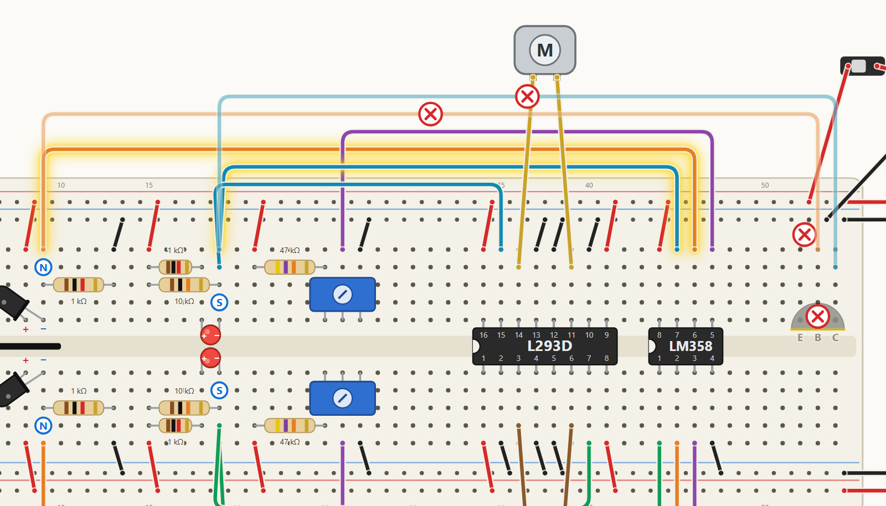
- Quitar el transistor del sensor derecho y los tres cables que iban a él
- Un cable de N del sensor derecho a la pata 6
- Un cable de la pata 7 (salida) a la fila S del sensor derecho
- La pata 15 del L293D sigue unida a esa fila
Paso 20 · Los cuatro casos otra vez
| Nada enfrente | los dos motores giran |
| Mano al sensor izquierdo | frena la rueda derecha |
| Mano al sensor derecho | frena la rueda izquierda |
| Mano a los dos | se frenan los dos |
Paso 20 · Prueba
Girar el segundo potenciómetro hasta que el LED derecho quede apagado sin nada enfrente y prenda con la mano.
Repetir los cuatro casos del paso 15.
🖼️ ESPACIO PARA MEME/GIF
Bloque 6: condensadores y pack
Paso 21 de 23
Los condensadores de la alimentación
Lo que logramos: Que la alimentación no tiemble ni se reinicie cuando los motores arrancan.
Paso 21 · Los condensadores de la alimentación
Al arrancar, un motor tira la alimentación hacia abajo y mete ruido. Los condensadores son pequeñas reservas de energía: la entregan en picos rápidos y todo se mantiene estable.

Paso 21 · Los condensadores de la alimentación
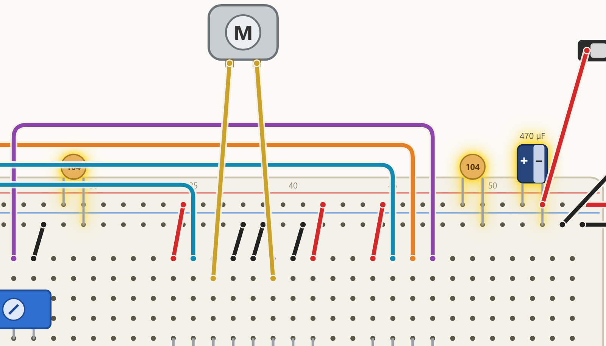
- C1 (470 µF, electrolítico) entre positivo y negativo, cerca de la batería: pata larga al +, franja al −
- C2 (100 nF, marcado 104) pegado al LM358
- C3 (100 nF) pegado al L293D, cerca de la pata 16
Paso 21 · Cuidado con C1
El electrolítico sí tiene polaridad: la franja del cuerpo marca la pata negativa y va al negativo.
Al revés se calienta y puede explotar.
Si se calienta o huele raro: apagar de inmediato.
Paso 21 · Prueba
El voltaje positivo-negativo sigue en 5,4 a 6 V.
Poner y quitar la mano varias veces, rápido: los motores arrancan y paran sin que los LED parpadeen y sin que nada se reinicie.
Paso 22 de 23
Los condensadores de los motores
Lo que logramos: Quitarle el ruido a cada motor desde su origen.
Paso 22 · Los condensadores de los motores
Un motor mientras gira genera chispitas eléctricas que confunden al chip y a los sensores. Un condensador de 100 nF directo entre sus dos terminales se las come.
No tiene polaridad.
Paso 22 · Los condensadores de los motores
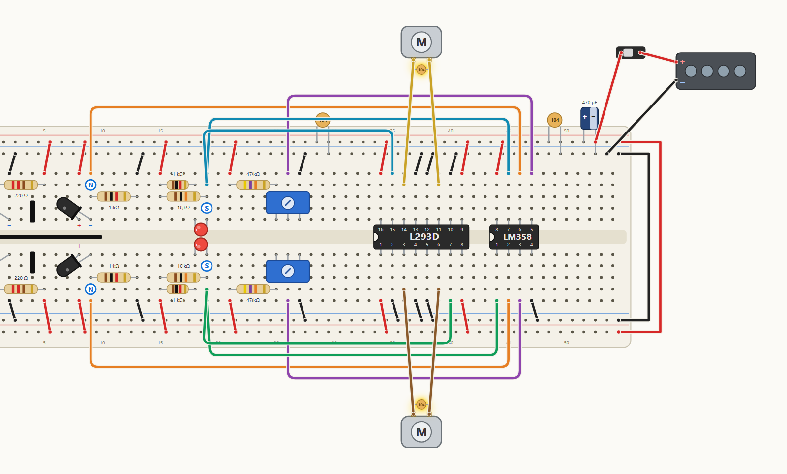
- C4 (100 nF) directo entre los dos terminales del motor 1
- C5 (100 nF) directo entre los dos terminales del motor 2
- Mejor soldados; si no hay soldadura, enrollar bien las patas
Paso 22 · Prueba
Poner y quitar la mano rápido frente a cada sensor: los motores arrancan y paran sin que los LED parpadeen y sin que se reinicie nada.
Paso 23 de 23 (opcional)
Motores con su propio pack de pilas
Lo que logramos: Solo si los motores no son de 3 a 6 V, o si con 6 V giran muy despacio.
Paso 23 · Motores con su propio pack de pilas
Hasta ahora un solo pack de 6 V alimenta todo. Aquí los motores pasan a su propio pack, por la pata 8 del L293D.
La lógica (pata 16), los sensores y el LM358 siguen en los 6 V.

Paso 23 · Motores con su propio pack de pilas
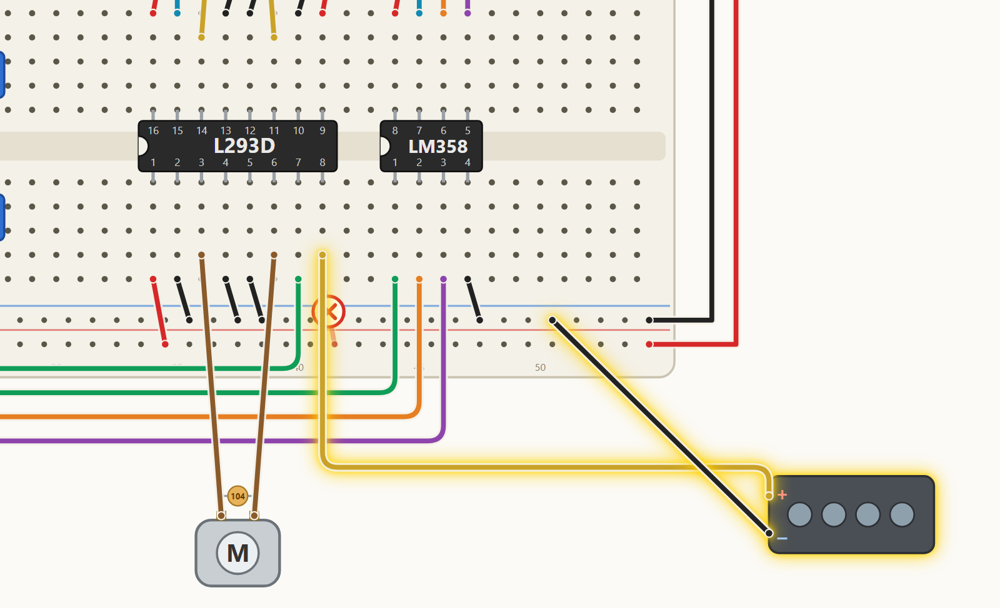
- Pata 8 del L293D: quitarla del positivo y llevarla al positivo del pack de motores
- Negativo del pack de motores al negativo del circuito (el mismo de todo)
- Pata 16 sigue en el positivo de 6 V de la lógica
Paso 23 · Cuidado
Los dos negativos se unen siempre.
La pata 16 nunca debe pasar de 7 V.
El L293D aguanta 600 mA por motor.
No usar la pila rectangular de 9 V: no entrega la corriente.
Paso 23 · Qué pack poner (el L293D se come unos 2,5 V)
| Motor de 5 V | pack de unos 7,5 V (5 pilas AA) |
| Motor de 6 V | pack de 8 a 9 V (6 pilas AA) |
| Motor de 10 a 12 V | pack de unos 12 V (8 pilas AA) |
Paso 23 · Prueba
Pata 16 contra el negativo: 5,4 a 6 V.
Pata 8: el voltaje del pack de motores.
Los motores giran más fuerte y los sensores siguen igual.
Así queda la placa completa
Para la próxima
- Montar el circuito en el chasis
- Calibrar los potenciómetros en el lugar de uso
- Pasar de la protoboard a una placa de circuito
🖼️ ESPACIO PARA MEME/GIF
Si me quieren agregar
Correo institucional:
jjardila@libertadores.edu.co